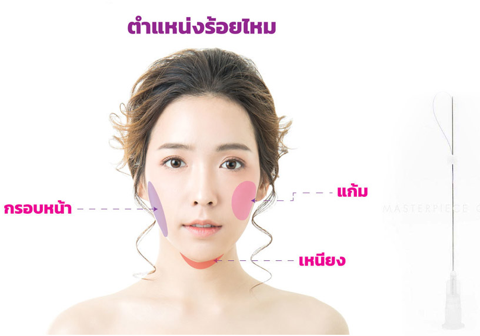

เป็นการฉีดตัวยาเฉพาะเข้าไปในชั้นไขมัน เพื่อสลายไขมันส่วนเกิน ลดเซลล์ลูไลท์กระตุ้นการสร้างคอลลาเจนใหม่ ทำให้ผิวไม่หย่อนคล้อย หลังการสลายไขมันเมื่อตัวยาถูกฉีดเข้าไปในชั้นไขมัน จะไปทำลาย เซลล์ไขมัน เมื่อเซลล์ไขมันตายก็จะกลายเป็นของเสีย ซึ่งของเสียจะถูก ขับออกทางระบบน้ำเหลือง
เหมาะกับผู้ที่มีปัญหาแบบไหนบ้าง ?เหมาะสำหรับผู้ที่มีปัญหาเรื่องไขมันบริเวณใบหน้า เช่น แก้ม เหนียง ที่ทำให้รูปหน้าไม่เรียวและดูหน้ากลม และต้องการกำจัดไขมัน ปรับรูป หน้าให้เล็กลง
- แพทย์จะฉีดยาเข้าไปในชั้นไขมันหลายๆ จุดและแต่ละจุดมีระยะห่างสม่ำเสมอกันทั่วบริเวณที่ต้องการรักษา
- หลังฉีดทันทีจะมีอาการบวมและจะบวมมากที่สุดในวันรุ่งขึ้น โดยอาการบวมจะค่อยๆ ลดลงประมาณ 2-5 วัน ซึ่งผิวจะเริ่มกระชับในสัปดาห์ที่ 5 และกระชับ ได้มากที่สุดในสัปดาห์ที่ 8
- ต้องทำการเข้ามาฉีดอย่างต่อเนื่องตามคำแนะนำของแพทย์เพื่อผลลัพธ์ที่ชัดเจน
- ควรดื่มน้ำมาก ๆ เพราะร่างกายจะกำจัดไขมันส่วนใหญ่ออกทางปัสสาวะ ดังนั้นยิ่งดื่มน้ำมากเท่าไหร่ ไขมันจะถูกกำจัดออกไปมากและเร็วยิ่งขึ้น
- ควรออกกำลังกายเบา ๆ ครั้งละ 30 นาทีประมาณ อาทิตย์ละ 1-2 ครั้ง เพื่อช่วยให้ร่างกายเผาผลาญไขมันได้ดียิ่งขึ้น
- เลี่ยงอาหารรสเค็ม หรืออาหารที่มีส่วนผสมของเกลือ อีกทั้งควรเปลี่ยนพฤติกรรมการทานอาหารจำพวก แป้ง น้ำตาลและไขมันให้น้อยลง เพื่อหลีกเลี่ยงการสะสมของไขมันอีกครั้ง
รีวิว Q&A (1)
คำถามเกี่ยวกับเมโสแฟต Q&A (2)
บริเวณที่นิยมฉีด Filler
- เติมเต็มให้คางดูยาวได้รูปมากขึ้น
- เติมเต็มริมฝีปากให้ดูอวบอิ่ม
- เติมเต็มใต้ตาให้ดูไม่ลึก
- เติมเต็มร่องแก้มให้เรียบเนียน
- เติมเต็มบริเวณใบหน้าส่วนต่างๆให้ดูเต็มอิ่ม
- ในกรณีที่ไม่ต้องการทำศัลยกรรมจมูกสามารถนำมาเติมเต็มจมูกให้ดูมีมิติเพิ่มขึ้นได้
ผลการรักษา
หลังฉีดสามารถเห็นผลได้ทันที โดยทั่วไปแพทย์จะทายาชาที่บริเวณที่จะฉีดฟิลเลอร์
หรือในบางกรณี แพทย์อาจใช้วิธีประคบน้ำแข็งก่อนทำการรักษา ซึ่งใช้เวลาฉีด 10 – 20 นาที
โดยคนไข้สามารถกลับบ้านได้เลยหลังรับการรักษาไม่ต้องพักฟื้น
อาการข้างเคียง
อาจมีอาการบวมเป็นการชั่วคราว (ส่วนใหญ่ในกรณีที่ฉีดฟิลเลอร์ที่ริมฝีปาก) แดง กดเจ็บ และฟกช้ำ
การประคบเย็นสามารถช่วยบรรเทาอาการเหล่านี้ได้ อาการบวมแดงมักจะหายไปภายใน 24 – 48 ชั่วโมง
และกลับไปดำเนินชีวิตตามปกติได้ทันทีโดยใช้เครื่องสำอางช่วยปกปิด
- 48 ชั่วโมงแรก ไม่ควรออกกำลังกายให้เหงื่อออกมาก หรือไปตากแดดร้อนๆ เพราะอาจทำให้เกิดรอยแดงมากขึ้นบริเวณที่ฉีด
- หลังฉีดทันทีไม่ควรจับ ลูบคลำ นวด หรือปั้นเอง ในบริเวณที่ฉีด เพราะอาจมีผลต่อการเคลื่อนตำแหน่งของตัวยาไปยังตำแหน่งที่ไม่ต้องการได้
- หลังฉีดควรดื่มน้ำในปริมาณที่มากโดยเฉพาะ 4 วันแรก ของหลังฉีด Filler ประมาณ 8-46 แก้ว เพราะ Filler เป็นสารอุ้มน้ำ การดื่มน้ำมากๆ จะทำให้ Filler ที่ทำการเติมเต็มเข้าไปนั้นอยู่ได้นานขึ้น และช่วยให้น้ำจับกับโมเลกุล ของ Filler ที่ฉีด ทำให้ดูเป็นธรรมชาติมากขึ้น
- หลีกเลี่ยงการทำเลเซอร์ความร้อนบริเวณที่ฉีด 2 สัปดาห์
รีวิว Q&A (1)
คำถามเกี่ยวกับฟิลเลอร์ Q&A (2)
การร้อยไหมละลาย PDO เป็นการยกกระชับ และฟื้นฟูผิวหน้าด้วยไหม ละลายชนิด PDO (Polydioxanone) ซึ่งมีความปลอดภัยสูง เป็นการ พัฒนาจากเส้นไหมใช้ในการเย็บเนื้อเยื่อเกี่ยวพัน หรือเส้นเลือดในร่าง กาย เส้นไหมจะละลายไปเองตามกระบวนการของร่างกาย ประมาณ ภายใน 8-12 เดือน โดยการร้อยไหมจะช่วยกระตุ้นเซลล์ที่สร้างเส้นใย คอลลาเจน ให้สร้างคอลลาเจนมาพันรอบแนวเส้นไหม ทำให้ผิวเกิด การดึงรั้ง จึงแสดงผลให้ผิวหน้าเต่งตึง กระชับ และยังช่วยกระตุ้น ระบบเมตาบอลิซึมของร่างกาย ทำให้เลือดไหลเวียนไปยังบริเวณดัง กล่าวได้ดีขึ้น ดังนั้น การร้อยไหมละลาย PDO จึงเป็นการฟื้นฟูสภาพ ผิว ลดริ้วรอย พร้อมกับยกกระชับใบหน้าไปพร้อมกัน
การร้อยไหม PDO เหมาะสมกับใบหน้าบริเวณที่ต้องการยกกระชับเฉพาะจุด เช่น เหนียงใต้คาง ร่องแก้ม เป็นต้น และลดริ้วรอยตื้น และลึกได้อีกด้วย เช่น ลดรอย ย่นหน้าผาก ลดรอยตีนกา เป็นต้น โดยการร้อยไหม PDO แต่ละครั้งนั้นขึ้นอยู่กับการประเมินของแพทย์ ร่วมกับต้องการของผู้เข้ารับการรักษา และจุดบริเวณ ใบหน้าที่ต้องการร้อยไหม ซึ่งส่วนใหญ่แพทย์จะพิจารณาใช้เส้นไหมประมาณ 20 30 หรือ 50 เส้น ขึ้นอยู่กับจุดบริเวณใบหน้าที่ต้องการร้อยไหม
 ข้อดีของ การร้อยไหมละลาย PDO- ใบหน้ากระชับ ผิวหน้าเต่งตึง
- สามารถลดริ้วรอย พร้อมกับการยกกระชับได้ทันที
- ช่วยกระตุ้นการสร้างคอลลาเจนบนใบหน้า ทำให้ผิวหน้ายกกระชับ สดใส
- ผลลัพธ์คงอยู่ได้ประมาณ 8-12 เดือน ขึ้นอยู่กับการดูแลของแต่ละบุคคล
- หลังร้อยไหมไปแล้ว ไหมจะค่อยๆ ละลายหมดไปเอง ไม่มีสิ่งตกค้างในร่างกาย
- สามารถร้อยไหม PDO ร่วมกับ V-Line Lift หรือการร้อยไหมเงี่ยงได้ เพื่อให้เกิดผลลัพธ์ของการยกกระชับ ปรับรูปหน้าอย่างมีประสิทธิภาพสูงสุด
- งดยาหรือวิตามิน ที่มีผลทำให้เลือดออกง่าย เช่น แอสไพริน วิตามิน E ใบแปะก๊วย เป็นต้น
- ผู้ที่มีโรคประจำตัว หรือรับประทานยาประจำ ควรปรึกษาแพทย์ก่อน
- หลังร้อยไหม อาจเกิดอาการปวด หรือบวมได้ โดยอาการจะค่อยๆ ดีขึ้นใน 2-3 วัน ขึ้นอยู่กับร่างกายของแต่ละบุคคล
- อาจรู้สึกตึงหน้า หรือรู้สึกเสียวๆ ที่ผิวหน้าบริเวณที่ร้อยไหม โดยอาการดังกล่าวจะค่อยๆ หายไปใน 3-5 วัน
- งดการทำเลเซอร์ โยคะ อบซาวน่า นวดหน้า หรือทำ Treatment หลังทำ 2-4 สัปดาห์
- งดดื่มแอลกอฮอล์ หลังทำ 1-2 สัปดาห์
- กรณียังมีริ้วรอยหลงเหลืออยู่ หรือต้องการให้ใบหน้ายกกระชับมากขึ้น สามารถปรึกษาแพทย์เพื่อทำการร้อยไหมเพิ่มได้
รีวิว Q&A (1)
คำถามเกี่ยวกับร้อยไหม Q&A (2)
เป็นการร้อยไหมด้วย “ไหม 8 มิติ” (Premium CNG PDO Thread POLYDIXANONE) ซึ่งเป็นไหมเส้นใหญ่ที่มีเงี่ยงรอบๆ เส้นไหม มากถึง 8 ทิศทาง เป็นไหมละลาย ช่วยยกกระชับผิวหน้าให้ตึง ลดความหย่อนคล้อย และริ้วรอยบนใบหน้า ด้วยลักษณะหนาม หรือเงี่ยงตามแนวเส้นของไหม จะเกี่ยวและยึดผิวได้ดีกว่าแบบไหมเส้นเรียบ สามารถยกกระชับ ปรับรูปหน้าให้ใบหน้าเรียว เป็นรูปตัว “วี” ให้เห็นในทันที มีความปลอดภัยสูง เกิดรอยช้ำน้อย สามารถใช้ชีวิตประจำวันได้ปกติทันทีหลังทำ
- ได้รับการรับรองมาตรฐานการผลิต (KGMP) จากประเทศเกาหลี ทำให้มั่นใจได้ถึงขั้นตอนการผลิต และคุณภาพที่ได้มาตรฐาน
- ตัวเข็มคม ลื่น ปราศจากสารก่อโลหะหนัก ปลอดภัย และทำอันตรายเนื้อเยื่อน้อยกว่า เนื่องจากใช้เข็มปลายทู่ จะช่วยลดอาการปวดบวมได้มากกว่าเข็มแบบทั่วไป
- หลังจาก ร้อยไหม แล้ว ไหมจะละลายสลายไปเอง ไม่เกิดสิ่งตกค้างอยู่ในร่างกายในระยะยาว
- รูปหน้ากระชับ ผิวหน้าเต่งตึง
- สามารถยกกระชับ ปรับรูปหน้าได้ทันที
- กรอบหน้าชัด ใบหน้าเรียว V Shape
- ช่วยกระตุ้นการสร้างคอลลาเจนบนใบหน้า ทำให้ผิวหน้ายกกระชับ สดใส
- หน้ายกกระชับทันทีอย่างเห็นได้ชัดหลังจากการทำ
- ผลลัพธ์คงอยู่ได้ประมาณ 8-12 เดือน ขึ้นอยู่กับการดูแลของแต่ละบุคคล
- หลัง ร้อยไหม ไปแล้ว ไหมจะค่อยๆ ละลายหมดไปเอง ไม่มีสิ่งตกค้างในร่างกาย
- งดยาหรือวิตามิน ที่มีผลทำให้เลือดออกง่าย เช่น แอสไพริน วิตามิน E ใบแปะก๊วย เป็นต้น
- ผู้ที่มีโรคประจำตัว หรือรับประทานยาประจำ ควรปรึกษาแพทย์ก่อน
- หลัง ร้อยไหม อาจเกิดอาการปวด หรือบวมได้ โดยอาการจะค่อยๆ ดีขึ้นใน 2-3 วัน ขึ้นอยู่กับร่างกายของแต่ละบุคคล
- อาจรู้สึกตึงหน้า หรือเสียวบริเวณปลายเส้นไหม โดยอาการดังกล่าวจะค่อยๆ หายไปใน 3-5 วัน
- งดการทำเลเซอร์ โยคะ อบซาวน่า นวดหน้า หรือทำ Treatment หลังทำ 2-4 สัปดาห์
- งดดื่มแอลกอฮอล์ หลังทำ 2-4 สัปดาห์
- หลีกเลี่ยงการกด หรือปรับไหมบนใบหน้า อย่างน้อย 2-4 สัปดาห์
- ในกรณีที่ใบหน้ามีความหย่อนคล้อยมาก อาจเกิดรอยบุ๋มบนใบหน้า แต่รอยบุ๋มจะค่อยๆ หายไปภายใน 1 เดือน
- กรณียังมีริ้วรอยหลงเหลืออยู่ หรือต้องการให้ใบหน้ายกกระชับมากขึ้น สามารถปรึกษาแพทย์เพื่อทำการ ร้อยไหม เพิ่มได้

{kind=link}
{kind=link}
{kind=link}
{kind=link}
{kind=link}